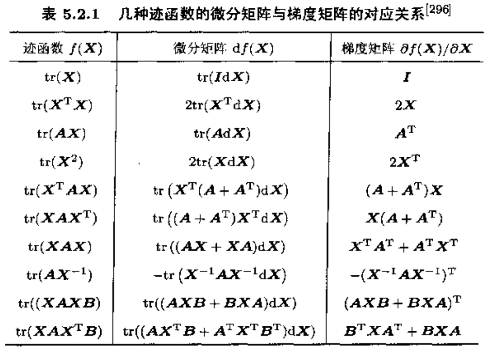
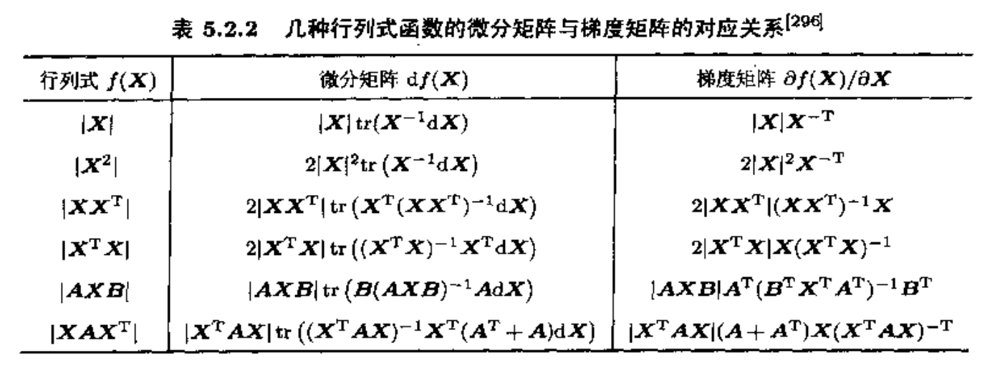

[矩阵论]3.3矩阵的微分和积分
矩阵的微分
定义：若 \(A(t)=\left(a_{ij}(t)\right)\in\mathbb C^{m\times n}\) 的每个元素 \(a_{ij}(t)\) 都是 \(t\) 的可微函数，则 \(A(t)\) 关于 \(t\) 的导数定义为： \[ \frac{\mathrm d}{\mathrm dt}A(t)=A'(t)=\left(a'_{ij}(t)\right)_{m\times n} \] 性质 1. \[ \frac{\mathrm d}{\mathrm dt}(A(t)+B(t))=\frac{\mathrm d}{\mathrm dt}A(t)+\frac{\mathrm d}{\mathrm dt}B(t) \] 性质 2. \[ \frac{\mathrm d}{\mathrm dt}(A(t)B(t))=\frac{\mathrm d}{\mathrm dt}A(t)\cdot B(t)+A(t)\cdot\frac{\mathrm d}{\mathrm dt}B(t) \] 推论. 若 \(C(t)=A(t)B(t)\)，则： \[ \mathrm dC=\mathrm dA\cdot B+A\cdot\mathrm dB \] 其中，\(\mathrm dA=(\mathrm dA/\mathrm dt)\cdot dt\)，\(\mathrm dB=(\mathrm dB/\mathrm dt)\cdot dt\).
例（逆矩阵的导数）： \[ \frac{\mathrm d}{\mathrm dt}\left(A(t)^{-1}\right)=-A(t)^{-1}\frac{\mathrm dA(t)}{\mathrm dt}A(t)^{-1} \]
证明：由于 \(A(t)\cdot A(t)^{-1}=I\)，两边求导得： \[\frac{\mathrm d}{\mathrm dt}A(t)\cdot A(t)^{-1}+A(t)\cdot\frac{\mathrm d}{\mathrm dt}\left(A(t)^{-1}\right)=0\] 故： \[\frac{\mathrm d}{\mathrm dt}\left(A(t)^{-1}\right)=-A(t)^{-1}\frac{\mathrm dA(t)}{\mathrm dt}A(t)^{-1}\]
性质 3. \[ \frac{\mathrm d}{\mathrm dt}(\alpha(t)A(t))=\alpha'(t)A(t)+\alpha(t)\cdot\frac{\mathrm d}{\mathrm dt}A(t) \] 性质 4. 若 \(A(t)\) 和 \(\frac{\mathrm d}{\mathrm dt}A(t)\) 可交换，\(f(z)\) 是与 \(t\) 无关的一元解析函数，则： \[ \frac{\mathrm d}{\mathrm dt}f(A(t))=f'(A(t))\cdot\frac{\mathrm d}{\mathrm dt}A(t) \]
形式证明（不严格）：若将 \(f(z)\) 展开为幂级数的形式 \(f(z)=\sum_{k=0}^\infty c_kz^k\)，则根据可交换条件有： \[\frac{\mathrm d}{\mathrm dt}A^k(t)=\sum_{i=0}^{k-1}A^i(t)\cdot\frac{\mathrm d}{\mathrm dt}A(t)\cdot A^{k-1-i}(t)=kA^{k-1}(t)\cdot\frac{\mathrm d}{\mathrm dt}A(t)\] 代入矩阵函数得： \[\frac{\mathrm d}{\mathrm dt}f(A(t))=\sum_{k=0}^\infty c_k\left(kA^{k-1}(t)\cdot\frac{\mathrm d}{\mathrm dt}A(t)\right)=f'(A(t))\cdot\frac{\mathrm d}{\mathrm dt}A(t)\]
性质 5（迹函数求导基本定理）. 若 \(A(t)\) 和 \(B(t)\) 可交换，\(f(z)\) 是与 \(t\) 无关的一元解析函数，则： \[ \frac{\mathrm d}{\mathrm dt}\text{tr}\big(f(A(t))\cdot B(t)\big)=\text{tr}\left(f'(A(t))\cdot\frac{\mathrm d}{\mathrm dt}A(t)B(t)\right)+\text{tr}\left(f(A(t))\cdot\frac{\mathrm d}{\mathrm dt}B(t)\right) \] 推论：取 \(B(t)=I\)，则有： \[ \frac{\mathrm d}{\mathrm dt}\text{tr}(f(A(t)))=\text{tr}\left(f'(A(t))\cdot\frac{\mathrm d}{\mathrm dt}A(t)\right) \]
矩阵的积分
定义：若矩阵 \(A(t)=(a_{ij}(t))\in\mathbb C^{m\times n}\) 的每个元素 \(a_{ij}(t)\) 都在 \([t_0,t]\) 上可积，则称 \(A(t)\) 可积，记为： \[ \int_{t_0}^t A(\tau)\mathrm d\tau=\left(\int_{t_0}^ta_{ij}(\tau)\mathrm d\tau\right)_{m\times n} \] 性质 1. \[ \int_{t_0}^t[A(\tau)+B(\tau)]\mathrm d\tau=\int_{t_0}^tA(\tau)\mathrm d\tau+\int_{t_0}^tB(\tau)\mathrm d\tau \] 性质 2. \[ \begin{align} &\int_{t_0}^t[A\cdot B(\tau)]\mathrm d\tau=A\cdot\left[\int_{t_0}^tB(\tau)\mathrm d\tau\right]\\ &\int_{t_0}^t[A(\tau)\cdot B]\mathrm d\tau=\left[\int_{t_0}^tA(\tau)\mathrm d\tau\right]\cdot B \end{align} \] 性质 3. \[ \frac{\mathrm d}{\mathrm dt}\int_{t_0}^tA(\tau)\mathrm d\tau=A(t) \] 性质 4. \[ \int_{t_0}^{t_1}A'(\tau)\mathrm d\tau=A(t_1)-A(t_0) \]
其他微分概念
函数对矩阵的导数
前文涉及到的矩阵函数是从矩阵到矩阵的一个映射，本节探讨的函数是关于矩阵各个元素的函数，即从矩阵映射到数，与矩阵函数不同。
矩阵元素与矩阵符号的代数关系
为了方便后续推导，这里列出矩阵元素与矩阵符号的代数关系式，可以避免将矩阵的各个分量列出来的繁琐。
我们约定 \(e_i\) 表示第 \(i\) 个分量为 1、其余分量为 0 的单位列向量，其维数由上下文确定，即同一个式子中出现的 \(e_i,e_j\) 可能是不同维数的。
用分量表示矩阵： \[A=\sum_{i=1}^m\sum_{j=1}^na_{ij}e_ie_j^T\]
用矩阵表示分量： \[a_{ij}=e_i^TAe_j\]
矩阵逐列拉成向量： \[\text{Vec}(A)=\sum_{i=1}^m\sum_{j=1}^na_{ij}e_j\otimes e_i=\sum_{i=1}^mA^T e_i\otimes e_i=\sum_{j=1}^ne_j\otimes Ae_j\]
用拉成向量的矩阵表示分量： \[a_{ij}=(e_j\otimes e_i)^T\text{Vec}(A)\]
定义：设 \(X=(\xi_{ij})_{m\times n}\)，\(f(X)\) 为 \(mn\) 元函数： \[ f(X)=f(\xi_{11},\ldots,\xi_{1n},\xi_{21},\ldots,\xi_{2n},\ldots,\xi_{m1},\ldots,\xi_{mn}) \] 定义 \(f(X)\) 对矩阵 \(X\) 的导数为： \[ \frac{\mathrm df}{\mathrm dX}=\left(\frac{\partial f}{\partial \xi_{ij}}\right)_{m\times n}= \begin{bmatrix} \frac{\partial f}{\partial \xi_{11}}&\cdots&\frac{\partial f}{\partial \xi_{1n}}\\ \vdots&\ddots&\vdots\\ \frac{\partial f}{\partial \xi_{m1}}&\cdots&\frac{\partial f}{\partial \xi_{mn}}\\ \end{bmatrix} =\sum_{i=1}^m\sum_{j=1}^n\frac{\partial f}{\partial \xi_{ij}}e_ie_j^T \] 微分形式： \[ \frac{\mathrm df}{\mathrm dX}=A\iff \mathrm df=\text{tr}(A^T\cdot\mathrm dX)=\text{tr}(A\cdot \mathrm dX^T) \]
证明： \[\begin{align}\mathrm df&=\sum_{i=1}^m\sum_{j=1}^n\frac{\partial f}{\partial\xi_{ij}}\mathrm d\xi_{ij}\\&=\sum_{i=1}^m\sum_{j=1}^n\left(e_i^T\frac{\mathrm df}{\mathrm dX}e_j\right)\left(e_i^T\cdot \mathrm dX\cdot e_j\right)\\&=\sum_{i=1}^m\sum_{j=1}^ne_j^T\left(\frac{\mathrm df}{\mathrm dX}\right)^Te_ie_i^T\cdot\mathrm dX\cdot e_j\\&=\sum_{j=1}^ne_j^T\left(\frac{\mathrm df}{\mathrm dX}\right)^T\left(\sum_{i=1}^me_ie_i^T\right)\cdot\mathrm dX\cdot e_j\\&=\sum_{j=1}^ne_j^T\left(\frac{\mathrm df}{\mathrm dX}\right)^T\mathrm dX\cdot e_j\\&=\text{tr}\left(\left(\frac{\mathrm df}{\mathrm dX}\right)^T\mathrm dX\right)\\&=\text{tr}(A^T\cdot dX)\end{align}\] 证毕。
非常重要！！！这个定理告诉我们：要求 \(\mathrm df/\mathrm dX\)，只需要将 \(\mathrm df\) 写作形如 \(\text{tr}(A^T\mathrm dX)\) 的形式，那么 \(A\) 就是结果。以下所有内容都围绕这一点展开。
性质 1（链式法则）：设 \(f(x)\) 是向量 \(x\) 的函数，\(x\) 是标量 \(t\) 的函数 \(x=x(t)\)，则： \[ \frac{\mathrm df}{\mathrm dt}=\frac{\mathrm dx^T}{\mathrm dt}\cdot\frac{\mathrm df}{\mathrm dx} \] 性质 2（链式法则）：设 \(f(X)\) 是 \(m\times n\) 矩阵 \(X\) 各元素的函数，而 \(X\) 又是标量 \(t\) 的函数，则： \[ \frac{\mathrm df}{\mathrm dt}=\text{tr}\left(\frac{\mathrm dX^T}{\mathrm dt}\cdot\frac{\mathrm df}{\mathrm dX}\right) \]
证明：根据微分形式： \[\mathrm df=\text{tr}\left(\left(\frac{\mathrm df}{\mathrm dX}\right)^T\mathrm dX\right),\quad \mathrm dX=\frac{\mathrm dX}{\mathrm dt}\mathrm dt\] 有： \[\mathrm df=\text{tr}\left(\left(\frac{\mathrm df}{\mathrm dX}\right)^T\frac{\mathrm dX}{\mathrm dt}\mathrm dt\right)=\text{tr}\left(\left(\frac{\mathrm df}{\mathrm dX}\right)^T\frac{\mathrm dX}{\mathrm dt}\right)\mathrm dt=\text{tr}\left(\frac{\mathrm dX^T}{\mathrm dt}\cdot\frac{\mathrm df}{\mathrm dX}\right)\mathrm dt\] 证毕。
例：关于迹函数的导数： \[ \begin{align} &\frac{\mathrm d}{\mathrm dX}\text{tr}(X^TA)=A\\ &\frac{\mathrm d}{\mathrm dX}\text{tr}(A^TX)=A\\ &\frac{\mathrm d}{\mathrm dX}\text{tr}(AX)=A^T \end{align} \]
证明：微分是线性算子，可以放入 \(\text{tr}(\cdot)\)，因此： \[\mathrm d(\text{tr}(X^TA))=\text{tr}(\mathrm d(X^TA))=\text{tr}(\mathrm dX^T A)=\text{tr}(A^T\mathrm dX)\] 根据微分形式，\(\mathrm d(\text{tr}(X^TA))/\mathrm dX=A\). 其他两式类似。证毕。
例：设 \(X\) 为可逆矩阵，\(f(X)=\text{tr}(AX^{-1})\)，则： \[ \frac{\mathrm d}{\mathrm dX}f(X)=-(X^{-1}AX^{-1})^T \]
证明： \[\mathrm df(X)=\text{tr}(\mathrm d(AX^{-1}))=\text{tr}(A\cdot\mathrm dX^{-1})\] 由于 \(XX^{-1}=I\)，两边取微分得：\(\mathrm dX\cdot X^{-1}+X\cdot\mathrm dX^{-1}=0\)，故 \(\mathrm dX^{-1}=-X^{-1}\cdot\mathrm dX\cdot X^{-1}\)，因此： \[\mathrm df(X)=\text{tr}\left(A\cdot(-X^{-1}\mathrm dX X^{-1})\right)=\text{tr}\left((-X^{-1}AX^{-1})\mathrm dX\right)\] 根据微分形式，\(\mathrm df(X)/\mathrm dX=(-X^{-1}AX^{-1})^T\). 证毕。
例：设 \(f(x)=x^TAx\)，则： \[ \frac{\mathrm df}{\mathrm dx}=(A+A^T)x \]
证明： \[\mathrm df=\mathrm d(x^TAx)=\mathrm dx^TAx+x^TA\mathrm dx=x^T A^T\mathrm dx+x^TA\mathrm dx=x^T(A^T+A)\mathrm dx=\text{tr}\left(((A+A^T)x)^T\cdot\mathrm dx\right)\] 根据微分形式，\(\mathrm df/\mathrm dx=(A+A^T)x\). 证毕。

例（行列式求导）：设矩阵 \(X\) 非奇异，则： \[ \frac{\mathrm d(|X|)}{\mathrm dX}=|X|(X^{-1})^T \]
或有微分形式： \[ \mathrm d|X|=|X|\text{tr}(X^{-1}\mathrm dX)=\text{tr}(|X|X^{-1}\mathrm dX) \]
证明：设 \(c_{ij}\) 为 \(x_{ij}\) 的代数余子式，根据行列式定义知： \[|X|=\sum_{i=1}^nc_{ij}x_{ij},\quad\forall j\] 由于 \(c_{ij}\) 与 \(x_{ij}\) 无关，所以有 \(\partial|X|/\partial x_{ij}=c_{ij}\)，于是有微分： \[\mathrm d|X|=\sum_{i=1}^n\sum_{j=1}^n c_{ij}\mathrm dx_{ij}=\text{tr}(X^\ast\mathrm dX)\] 其中 \(X^\ast\) 是 \(X\) 的伴随矩阵，由于 \(X^\ast=|X|X^{-1}\)，因此： \[\mathrm d|X|=\text{tr}(|X|X^{-1}\mathrm dX)\] 证毕。
例：对于任意非奇异矩阵 \(X\)，有： \[ \frac{\mathrm d(\ln|X|)}{\mathrm dX}=(X^T)^{-1} \] 例：对于任意 \(X\in\mathbb R^{m\times n}\)， \[ \frac{\mathrm d(\ln|\delta I+X^TX|)}{\mathrm dX}=2X(\delta I+X^TX) \] 
矩阵对矩阵的导数
直积（Kronecker 积）：设 \(A\in\mathbb C^{m\times n},\,B\in\mathbb C^{p\times q}\)，称如下分块矩阵为 \(A\) 与 \(B\) 的直积： \[ A\otimes B=\begin{bmatrix}a_{11}B&a_{12}B&\cdots&a_{1n}B\\a_{21}B&a_{22}B&\cdots&a_{2n}B\\\vdots&\vdots&\ddots&\vdots\\a_{m1}B&a_{m2}B&\cdots&a_{mn}B\\\end{bmatrix}\in\mathbb C^{mp\times nq} \] 特别地，若 \(A\in\mathbb C^{m\times 1},\,B\in\mathbb C^{n\times 1}\)，则 \(A\otimes B^T=AB^T\).
定义：设有关于 \(X=(\xi_{ij})_{m\times n}\) 的 \(mn\) 元函数： \[ f_{ij}(X)=f_{ij}(\xi_{11},\ldots,\xi_{1n},\ldots,\xi_{m1},\ldots,\xi_{mn}),\quad i=1,\ldots,r,\,j=1,\ldots,s \] 定义矩阵： \[ F(X)=\begin{bmatrix}f_{11}&\cdots&f_{1s}\\\vdots&\ddots&\vdots\\f_{r1}&\cdots&f_{rs}\end{bmatrix} \] 定义 \(F(X)\) 的导数如下： \[ \frac{\mathrm dF}{\mathrm dX}= \begin{bmatrix} \frac{\partial F}{\partial \xi_{11}}&\cdots&\frac{\partial F}{\partial \xi_{1n}}\\ \vdots&\ddots&\vdots\\ \frac{\partial F}{\partial \xi_{m1}}&\cdots&\frac{\partial F}{\partial \xi_{mn}} \end{bmatrix}=\sum_{i=1}^m\sum_{j=1}^n(e_ie_j^T)\otimes\frac{\partial F}{\partial \xi_{ij}} \] 其中， \[ \frac{\partial F}{\partial \xi_{ij}}= \begin{bmatrix} \frac{\partial f_{11}}{\partial \xi_{ij}}&\cdots&\frac{\partial f_{1s}}{\partial \xi_{ij}}\\ \vdots&\ddots&\vdots\\ \frac{\partial f_{r1}}{\partial \xi_{ij}}&\cdots&\frac{\partial f_{rs}}{\partial \xi_{ij}} \end{bmatrix}=\sum_{k=1}^r\sum_{l=1}^s\frac{\partial f_{kl}}{\partial \xi_{ij}}e_ke_l^T \] 特别地，当 \(F\in\mathbb C^{m\times 1}\) 且 \(X\in\mathbb C^{n\times 1}\) 时， \[ \frac{\mathrm dF}{\mathrm dX^T}= \begin{bmatrix} \frac{\partial f_{1}}{\partial \xi_{1}}&\cdots&\frac{\partial f_{1}}{\partial \xi_{n}}\\ \vdots&\ddots&\vdots\\ \frac{\partial f_{m}}{\partial \xi_{1}}&\cdots&\frac{\partial f_{m}}{\partial \xi_{n}} \end{bmatrix} \] 性质（链式法则）：设 \(f(x)\) 是向量 \(x\) 的函数，\(x\) 又是 \(u\) 的函数，则： \[ \frac{\mathrm df}{\mathrm du}=\frac{\mathrm dx^T}{\mathrm du}\frac{\mathrm df}{\mathrm dx} \] 微分形式：设 \(y=F(x)\) 是向量 \(x\) 的向量值函数，则： \[ \frac{\mathrm dy}{\mathrm dx^T}=A\iff\mathrm dy=A\mathrm dx \]
一些论文中可能会把 \(\mathrm dy/\mathrm dx^T\) 不严谨地直接写作 \(\mathrm dy/\mathrm dx\).
在微分方程中的应用
微分方程： \[ \begin{cases} x_1'(t)=a_{11}x_1(t)+a_{12}x_2(t)+\cdots+a_{1n}x_n(t)+b_1(t)\\ x_2'(t)=a_{21}x_1(t)+a_{22}x_2(t)+\cdots+a_{2n}x_n(t)+b_2(t)\\ \quad\vdots\\ x_n'(t)=a_{n1}x_1(t)+a_{n2}x_2(t)+\cdots+a_{nn}x_n(t)+b_n(t)\\ \end{cases} \] 令： \[ A=\begin{bmatrix}a_{11}&\cdots&a_{1n}\\\vdots&\ddots&\vdots\\a_{n1}&\cdots&a_{nn}\end{bmatrix},\quad x(t)=\begin{bmatrix}x_1(t)\\\vdots\\x_n(t)\end{bmatrix},\quad b(t)=\begin{bmatrix}b_1(t)\\\vdots\\b_n(t)\end{bmatrix} \] 则可写作矩阵形式： \[ x'(t)=A\cdot x(t)+b(t) \] 定理：齐次微分方程 \(x'(t)=Ax(t)\) 的通解为： \[ x(t)=e^{tA}c \] 其中 \(c\) 为任意常向量。若再加上初始条件 \(x(t_0)=x_0\)，则解为： \[ x(t)=e^{(t-t_0)A}x_0 \] 定理：非齐次微分方程 \(x'(t)=Ax(t)+b(t)\) 的通解为： \[ x(t)=x_1(t)+x_2(t) \] 其中 \(x_1(t)=e^{tA}c\) 是对应齐次微分方程的通解，\(x_2(t)\) 是非齐次微分方程的一个特解。常向量 \(c\) 由初始条件确定。
使用常数变易法计算特解：设 \(x_2(t)=e^{tA}c(t)\)，代入原非齐次微分方程有： \[ e^{tA}c'(t)=b(t) \] 由此可以解出一个 \(c(t)\)，从而得到一个特解。